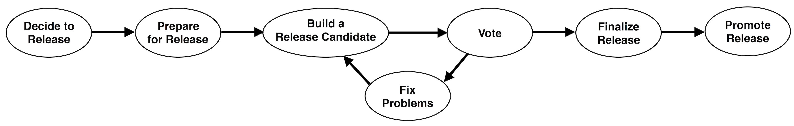

Creating a Release¶
This guide describes how to create a release of Apache Paimon Rust, including the Rust crates, Python binding, and Go binding. It follows the ASF Release Policy and Release Distribution Policy.
Overview¶

The release process consists of:
- Decide to release
- Prepare for the release
- Build a release candidate
- Vote on the release candidate
- If necessary, fix any issues and go back to step 3
- Finalize the release
- Promote the release
Automated Publishing¶
When a version tag is pushed, GitHub Actions automatically publishes the language-specific artifacts:
| Component | Tag Pattern | Published To | Pre-release (-rc) Behavior |
|---|---|---|---|
| Rust crates | v0.1.0 |
crates.io | Dry-run only |
| Python binding | v0.1.0 |
PyPI | Publishes to TestPyPI |
| Go binding | v0.1.0 |
Go module proxy | Publishes as bindings/go/vX.Y.Z-rcN |
The Release Manager's primary responsibility is managing the source release (tarball + signature) and coordinating the community vote. Language artifact publishing is handled by CI once the final tag is pushed.
Decide to Release¶
Deciding to release and selecting a Release Manager is the first step. This is a consensus-based decision of the community.
Anybody can propose a release on the dev mailing list, giving a short rationale and nominating a committer as Release Manager (including themselves).
Checklist
- [ ] Community agrees to release
- [ ] A Release Manager is selected
Prepare for the Release¶
One-time Release Manager Setup¶
Before your first release, complete the following setup.
GPG Key¶
-
Install GnuPG if not already available:
-
Generate a key pair:
When prompted, select:
- Key type: RSA and RSA (option 1)
- Key size: 4096
- Validity: 0 (does not expire)
- Real name and email: use your Apache name and
@apache.orgemail
-
List your keys to find your key ID (the 8-digit hex string in the
publine):Example output:
pub rsa4096/845E6689 2024-01-01 [SC] ABCDEF1234567890ABCDEF1234567890845E6689 uid [ultimate] Your Name <yourname@apache.org> sub rsa4096/12345678 2024-01-01 [E]In this example, the key ID is
845E6689. Replace<YOUR_KEY_ID>with your actual key ID in the following steps. -
Upload your public key to the Ubuntu key server:
-
Append your key to the project KEYS file (requires PMC write access):
svn co https://dist.apache.org/repos/dist/release/paimon/ paimon-dist-release --depth=files cd paimon-dist-release (gpg --list-sigs <YOUR_KEY_ID> && gpg --armor --export <YOUR_KEY_ID>) >> KEYS svn ci -m "Add <YOUR_NAME>'s public key"Note
Never remove existing keys from the KEYS file — users may need them to verify older releases.
-
Configure Git to sign tags with your key:
Omit
--globalto only configure signing for the current repository. -
(Optional) Upload the GPG public key to your GitHub account:
Go to https://github.com/settings/keys and add your GPG key. Make sure the email associated with the key is also added at https://github.com/settings/emails, otherwise signed commits and tags may show as "Unverified".
GitHub Actions Secrets¶
Ensure the following repository secrets are configured:
CARGO_REGISTRY_TOKEN— for crates.io publishingPYPI_API_TOKEN— for PyPI publishingTEST_PYPI_API_TOKEN— for TestPyPI publishing
Clone into a fresh workspace¶
Use a clean clone to avoid local changes affecting the release.
Set up environment variables¶
RELEASE_VERSION="0.1.0"
SHORT_RELEASE_VERSION="0.1"
NEXT_VERSION="0.2.0"
RELEASE_TAG="v${RELEASE_VERSION}"
RC_NUM="1"
RC_TAG="v${RELEASE_VERSION}-rc${RC_NUM}"
Generate dependencies list¶
ASF release policy requires that every release comply with ASF licensing policy. Generate and commit a dependency list on main before creating the release branch, so both main and the release branch have the same list.
-
Install cargo-deny:
-
Generate the dependency list (requires Python 3.11+):
This creates a
DEPENDENCIES.rust.tsvfile for the workspace root and each member crate. -
Commit the result:
To only check licenses without generating files: python3 scripts/dependencies.py check.
Create a release branch¶
From main, create a release branch:
Bump version on main for next development cycle¶
After cutting the release branch, bump main to the next version so that ongoing development does not use the released version number:
git checkout main
./scripts/bump-version.sh ${RELEASE_VERSION} ${NEXT_VERSION}
git add Cargo.toml
git commit -m "chore: bump version to ${NEXT_VERSION}"
git push origin main
The script updates version in root Cargo.toml ([workspace.package] and the paimon entry in [workspace.dependencies]). All member crates inherit the workspace version.
Optional: Create PRs for release blog and download page¶
If the project website has a release blog or download page, create pull requests to add the new version. Do not merge these PRs until the release is finalized.
Build a Release Candidate¶
Create the RC tag¶
Check out the release branch, create a signed RC tag, and push it. Pushing the tag triggers CI workflows for all three components.
git checkout release-${SHORT_RELEASE_VERSION}
git pull
git tag -s ${RC_TAG} -m "${RC_TAG}"
git push origin ${RC_TAG}
After pushing, verify in GitHub Actions that all release workflows succeed:
- Release Rust — dry-run check for RC tags
- Release Python Binding — publishes to TestPyPI
- Release Go Binding — builds embedded libraries for all platforms, creates
bindings/go/${RC_TAG}tag
Create source release artifacts¶
From the repository root (on the release branch, at the commit you tagged):
This creates the following under dist/:
paimon-rust-${RELEASE_VERSION}.tar.gz— source archivepaimon-rust-${RELEASE_VERSION}.tar.gz.asc— GPG signaturepaimon-rust-${RELEASE_VERSION}.tar.gz.sha512— SHA-512 checksum
The script automatically generates the archive from HEAD via git archive, signs it with your GPG key, and verifies the signature.
Stage artifacts to SVN¶
Upload the source release to the ASF dev area:
svn checkout https://dist.apache.org/repos/dist/dev/paimon/ paimon-dist-dev --depth=immediates
cd paimon-dist-dev
mkdir paimon-rust-${RELEASE_VERSION}-rc${RC_NUM}
cp ../paimon-rust-${RELEASE_VERSION}.tar.gz* paimon-rust-${RELEASE_VERSION}-rc${RC_NUM}/
svn add paimon-rust-${RELEASE_VERSION}-rc${RC_NUM}
svn commit -m "Add paimon-rust ${RELEASE_VERSION} RC${RC_NUM}"
Checklist
- [ ] RC tag pushed and CI workflows succeeded
- [ ] Source tarball, signature, and checksum staged to dist.apache.org dev
Vote on the Release Candidate¶
Start a vote on the dev mailing list.
Subject: [VOTE] Release Apache Paimon Rust ${RELEASE_VERSION} (RC${RC_NUM})
Body:
Hi everyone,
Please review and vote on release candidate #${RC_NUM} for Apache Paimon Rust ${RELEASE_VERSION}.
[ ] +1 Approve the release
[ ] +0 No opinion
[ ] -1 Do not approve (please provide specific comments)
The release candidate is available at:
https://dist.apache.org/repos/dist/dev/paimon/paimon-rust-${RELEASE_VERSION}-rc${RC_NUM}/
Git tag:
https://github.com/apache/paimon-rust/releases/tag/${RC_TAG}
KEYS for signature verification:
https://downloads.apache.org/paimon/KEYS
The vote will be open for at least 72 hours.
Thanks,
Release Manager
After the vote passes, send a result email:
Subject: [RESULT][VOTE] Release Apache Paimon Rust ${RELEASE_VERSION} (RC${RC_NUM})
Fix Any Issues¶
If the vote reveals issues:
- Fix them on the release branch via normal PRs.
- Remove the old RC from dist dev (optional):
cd paimon-dist-dev
svn remove paimon-rust-${RELEASE_VERSION}-rc${RC_NUM}
svn commit -m "Remove paimon-rust ${RELEASE_VERSION} RC${RC_NUM} (superseded)"
- Increment
RC_NUM, then go back to Build a release candidate.
Finalize the Release¶
Push the release tag¶
Once the vote passes, create and push the final release tag. This triggers CI to publish to crates.io, PyPI, and Go module proxy automatically.
git checkout ${RC_TAG}
git tag -s ${RELEASE_TAG} -m "Release Apache Paimon Rust ${RELEASE_VERSION}"
git push origin ${RELEASE_TAG}
Move source artifacts to the release repository¶
svn mv -m "Release paimon-rust ${RELEASE_VERSION}" \
https://dist.apache.org/repos/dist/dev/paimon/paimon-rust-${RELEASE_VERSION}-rc${RC_NUM} \
https://dist.apache.org/repos/dist/release/paimon/paimon-rust-${RELEASE_VERSION}
Verify published artifacts¶
- Rust: crates.io/crates/paimon shows version
${RELEASE_VERSION} - Python: PyPI — pypaimon-rust shows version
${RELEASE_VERSION} - Go:
go list -m github.com/apache/paimon-rust/bindings/go@v${RELEASE_VERSION}resolves
Create GitHub Release¶
- Go to Releases — New release.
- Choose tag
${RELEASE_TAG}. - Click Generate release notes and review.
- Click Publish release.
Checklist
- [ ] Release tag pushed; CI published to crates.io, PyPI, and Go module proxy
- [ ] Source artifacts moved to dist release
- [ ] GitHub Release created
Promote the Release¶
Update the Releases page¶
Update the Releases page: move the released version from "Upcoming" to "Past Releases" with a summary of key features and a link to the GitHub release notes.
Announce the release¶
Wait at least 24 hours after finalizing. Send the announcement to dev@paimon.apache.org and announce@apache.org using your @apache.org email in plain text.
Subject: [ANNOUNCE] Release Apache Paimon Rust ${RELEASE_VERSION}
Body:
The Apache Paimon community is pleased to announce the release of
Apache Paimon Rust ${RELEASE_VERSION}.
Rust: cargo add paimon
Python: pip install pypaimon-rust
Go: go get github.com/apache/paimon-rust/bindings/go@v${RELEASE_VERSION}
Release notes:
https://github.com/apache/paimon-rust/releases/tag/v${RELEASE_VERSION}
Thanks to all contributors!